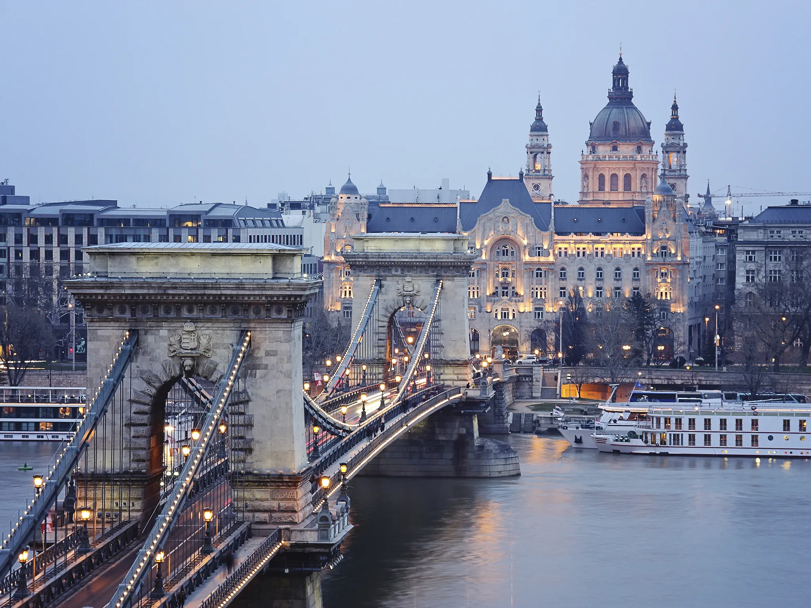

Culture
Western Europe
The History of western European countries was formed around Greco-Roman civilization and Western Christianity
The Catholic church has also greatly affected Western Civilization
The legal systems are based a lot on the Roman Empire and their Laws

Eastern Europe
The East of Europe has many Slavic Traditions and uses many slavic languages like Polish, Russian and Ukrainian
Eastern Europe has a strong connection to Eastern Christianity which developed through the Eastern Roman Empire (Byzatine) adn later influenced by the Ottoman Empire
There are many traditional slavic festivals like Maslenitsa and Kupala Night